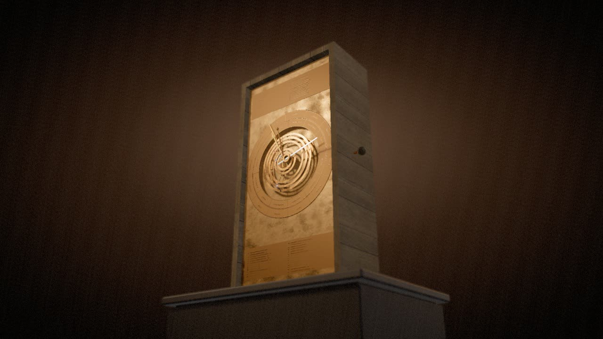

An exhibit in five rooms
Antikythera
Cosmos
A museum-style exhibit of the Antikythera mechanism: 69 gears rebuilt from the real tooth counts, turning by one crank in your browser.
Status: v1, finished and on view
- 69 gears, every one cut from a single table
- 30 of them survive in the bronze fragments
- 223 teeth on the main wheel, one turn a year
- 254/19 the Moon's ratio, exact in the gearing
- 51 eclipse glyphs, held against NASA's canon
- 14 narrated leaves in the walkthrough
Plan of the gallery
- IThe wreck and the findFragment A
- IIReading through the corrosionThe X-ray scans
- IIIThe gear trainsMetonic, Saros, pin and slot
- IVThe front dialZodiac and calendar
- VTurn it yourselfThe live reconstruction
Every clip in these rooms was filmed frame by frame from the running exhibit, not rendered for show. What the bronze preserves and what is reconstruction is marked as you go.
Room I
The wreck and the find
In 1901 sponge divers working a Roman-era wreck off Antikythera brought up a corroded lump of bronze. It lay unregarded until May 1902, when the archaeologist Valerios Stais saw a gearwheel in it. The ship had gone down around 70 to 60 BC.
What survives today is 82 fragments, about a third of the machine, in the National Archaeological Museum in Athens. On the plinth is the largest of them. Two thousand years of seawater have turned the metal to a crust of corrosion, but the four spokes of the main wheel still show through it.
Cat. I.1
Fragment A
- Material
- Bronze, corroded to a crust; shown here from a CT scan of the original
- Date
- Made in the second or early first century BC; lost at sea about 70 to 60 BC
- Findspot
- Roman-era wreck off Antikythera; recovered 1901
- Fragment
- A, the largest of the 82
- Scan
- Ashkan Pakzad, CC BY 4.0
Room II
Reading through the corrosion
In 2005 an eight-tonne X-ray machine was shipped to Athens and scanned the fragments slice by slice. Inside the crust were the gears, their teeth countable where the rims survive, and thousands of letters of Greek, many of them read for the first time since antiquity.
Thirty of the gears survive in the fragments, most with their tooth counts estimated from broken rims. The other thirty-nine follow the model Tony Freeth's team at UCL published in 2021. Two of the planetary periods come straight off the bronze: 462 years for Venus and 442 for Saturn, read on the cover inscription.
Cat. II.1
The reconstruction inside the scan
- Shown
- Fragment A at partial opacity over the 69-gear model, the crank turning
- Scan
- Ashkan Pakzad, CC BY 4.0
- Model
- After Freeth et al., Sci. Rep. 11:5821 (2021)
Cat. II.2
Only what survives
- Solid
- The thirty gears found in the fragments
- Ghosts
- The thirty-nine that follow the 2021 model
- Note
- Most surviving tooth counts are estimates from broken rims
Room III
The gear trains
Every pointer on the machine is geared off one rotation. In this copy each rate is an exact fraction of the main wheel's turn, worked out from the tooth counts alone: 254/19 for the Moon, 940/4237 for the Saros, −5/93 for the regressing lunar nodes, 1513/480 for Mercury. The back of the machine carries two great spirals, one for the calendar and one for eclipses.
Case A · The Metonic calendar
The upper spiral is the Metonic calendar: 235 months in five turns, nineteen years. Its month names belong to a Corinthian family of calendars, most likely that of Epirus in north-west Greece. Inside it one small dial counts the 76-year Callippic period and another the four-year cycle of the games: the Isthmia, Olympia, Nemea and Pythia, and two lesser games, the Naa at Dodona and the Halieia of Rhodes. The pointer carries a pin that slides outward along the groove as the years pass.
Cat. III.1
Back dial, upper
- Dials
- Metonic (19 years), Callippic (76 years), games (4 years)
- Speed
- About half a year a second
- After
- Freeth et al.; Iversen 2017
Case B · The Saros and the Exeligmos
The lower spiral is the Saros: 223 months, after which eclipses repeat. Fifty-one of its cells carry glyphs, Σ for a lunar eclipse and Η for a solar one, with the hour. A Saros is a third of a day longer than 6,585 days, so the small Exeligmos dial adds 0, 8 or 16 hours. The exhibit holds every glyph against NASA's catalogue of real eclipses, and says plainly when the machine is wrong.
Cat. III.2
Back dial, lower
- Dials
- Saros (223 months); Exeligmos (adds 0, 8 or 16 hours)
- Glyphs
- 51, after Freeth 2014
- Checked
- Against Espenak and Meeus, NASA
Case C · The pin and slot
Hidden at the back are two 50-tooth gears face to face on axes offset by 1.1 mm, a pin on one riding in a slot on the other. As they turn, the slotted gear speeds up and slows down by ±6.5°: the Moon's own acceleration near perigee. The pair rides on a 223-tooth platform that creeps round once in nine years, so the swing follows the slowly turning lunar orbit. Nothing this intricate survives from the next thousand years.
Cat. III.3
The lunar anomaly
- Gears
- Two of 50 teeth, 1.1 mm off axis
- Swing
- ±6.5°, checked against asin(d/r)
- Shown
- The lunar train alone, case open
Case D · Taken apart
Every wheel slides out along its arbor and keeps turning, so the trains that share the great main wheel can be told apart. Nothing here is decorative: each of the 69 is cut from one gear table with its teeth, module, arbor and couplings, and no third-party geometry is imported.
Cat. III.4
The whole train, exploded
- Wheels
- 69, from data/gears.json
- Modules
- Freeth 2021, Table S8
Room IV
The front dial
The front is the sky. The inner ring is the zodiac, twelve signs of 30°. The outer ring names the months of the Egyptian calendar, drawn here with its 365 days as the 2021 model has it; the owner could slip it round a day every four years. A 2024 recount of the holes beneath the ring points to 354, a lunar year, so how it was kept in step is still argued over.
The date pointer reads the calendar; the true-sun pointer with its golden ball reads the zodiac. The moon pointer is driven through three pairs of gears, 64 on 38, 48 on 24 and 127 on 32, whose counts multiply out to exactly 254/19: in nineteen years the Moon circles the zodiac 254 times. A little ball, half pale and half dark, turns once a lunar month to show its phase.
Cat. IV.1
Front dial
- Rings
- Zodiac; Egyptian calendar (drawn with 365 days)
- Pointers
- Date, Sun, Moon with phase ball, and rings for Mercury, Venus, Mars, Jupiter and Saturn
- Plates
- The parapegma, star risings and settings keyed to letters on the dial
- After
- Freeth et al. 2021; Bitsakis and Jones 2016; Woan and Bayley 2024
The planetary rings, their epicyclic gearing and their coloured stones are the 2021 team's reconstruction; only the Venus and Saturn periods are read on the bronze.
Room V
Turn it yourself
Everything starts at the crank on the right. It turns a 48-tooth crown wheel against the 223-tooth main wheel: about four and two-thirds turns of the crank move the main wheel once round, which is one year.
The machine has no clock inside it. It was set by hand once, on one particular day, and after that it only counts turns. Nothing on the bronze states that day, so scholars inferred it from the eclipse glyphs: Carman and Evans found the full moon of 12 May 205 BC; Voulgaris and colleagues argue for 22 December 178 BC. The exhibit lets you switch between them, and every dial re-sets.
Cat. V.1
The crank and the main wheel
- Gearing
- 48-tooth crown wheel on the 223-tooth main wheel
- Ratio
- 223/48 turns of the crank to the year
- Epoch
- 12 May 205 BC (Carman and Evans), or 22 Dec 178 BC (Voulgaris)

Cat. V.2 The vitrine: the case on its plinth, as the live exhibit opens.
In the live exhibit you can
- Turn the crank at a day, a month, a year or ten years a second, drag the handle to wind it by hand, or press the space bar.
- Jump to the next eclipse, type a year, or press today and see how far twenty-two centuries have carried the pointers.
- Hover a gear for its tooth count and rate; click it to see its train alone.
- Lift the plates away, take the machine apart, show only what survives, or crossfade to the CT scan of the real bronze.
- Draw the machine's own sky, retrograde loops and all, beside the true one.
- Follow a narrated walkthrough of fourteen leaves, then share any view as a link.
Needs a browser with WebGL. About 15 MB, most of it the machine. It installs as an app and, once visited, opens offline.
From the conservation file
How it was made
One table, three engines
One file is the source of truth: data/gears.json holds every wheel, its teeth, its module, the arbor it rides and what it meshes with. A Python solver turns it into exact rational rates and an arbor layout; Blender 5.1 cuts the wheels, plates, dials, pointers and case parametrically and exports a glTF that carries each driver rule on its nodes; the browser turns the machine with three.js from the same arithmetic Blender used.
Time is Julian Day throughout, on the proleptic Julian calendar for dates BC with astronomical years (205 BC is −204). Nothing in the exhibit trusts a JavaScript date.
How the numbers are checked
- The tests derive every pointer's rate from the tooth counts and assert it as an exact fraction. No decimals, no tolerances.
- The Blender build drives the finished rig, reads every gear back, and checks each pin-and-slot swing against asin(d/r).
- The eclipse-year model reproduces the 51 / 38 / 28 glyph counts and every glyph read on the surviving Saros cells (Freeth 2014).
- Each month the machine predicts is held against 23,962 rows of NASA's Five Millennium Canon.
- 70 tests in all: 36 in Python, 34 in the web exhibit.
How good was it?
Against a modern ephemeris the mean Sun drifts a fraction of a degree per century. The Moon, thanks to the pin and slot, stays within about two degrees. One caution: these wheels are cut perfectly, and the originals were filed by hand. A 2025 preprint argues that teeth as uneven as those measured would have jammed, so either the maker worked finer than the corroded remains now show, or it never ran this smoothly.
Bronze and reconstruction
Where the exhibit shows something the bronze does not preserve, it says so. Thirty-nine of the gears, the planetary display, the dragon hand and most of the lettering are reconstructions. The parapegma's Greek wording and the Saros glyph hours beyond the surviving cells are schematic. The decisions, and the reasons for them, are kept in the repository's NOTES.md.
Further reading
Sources and credits
- Freeth, Higgon, Dacanalis, MacDonald, Georgakopoulou and Wojcik, A Model of the Cosmos in the ancient Greek Antikythera Mechanism, Scientific Reports 11:5821 (2021), CC BY 4.0. The reconstruction this exhibit follows, with the earlier Antikythera Mechanism Research Project papers of 2006, 2008, 2012 and 2014 (Freeth 2014 for the eclipse glyphs).
- Fred Espenak and Jean Meeus (NASA Goddard), Five Millennium Canon of Solar and Lunar Eclipses: the eclipse ground truth.
- Bitsakis and Jones, The Front Dial and Parapegma Inscriptions, Almagest 7.1 (2016), CC BY-NC 4.0.
- Iversen 2017, Hesperia 86: the games and the calendar. Woan and Bayley 2024: the calendar ring's holes. Szigety and Arenas 2025 (a preprint): the teeth.
- Carman and Evans 2014: the epoch of 12 May 205 BC. Voulgaris, Mouratidis and Vossinakis, Almagest 14.1 (2023): 22 December 178 BC.
| What | Who | Licence |
|---|---|---|
| Fragment A CT scan | Ashkan Pakzad | CC BY 4.0 |
| Ephemeris (astronomy-engine) | Don Cross | MIT |
| Reconstruction model | Freeth et al., Sci. Rep. 11:5821 (2021) | CC BY 4.0 |
| Parapegma and front dial inscriptions | Bitsakis and Jones, Almagest 7.1 (2016) | CC BY-NC 4.0 |
| Eclipse canon | Espenak and Meeus, NASA GSFC | Credited as "Eclipse Predictions by Fred Espenak and Jean Meeus (NASA's GSFC)" |
| Moon face | NASA CGI Moon Kit (LROC colour mosaic) | Public domain |
| Room lighting (HDRIs studio_small_09, artist_workshop) | Poly Haven | CC0 |
| Layout reference | Thomas Weibel | CC BY |
| Narration voice "Arthur" | ElevenLabs library voice | ElevenLabs terms |
| Typefaces Marcellus and Alegreya | Google Fonts | SIL Open Font Licence |